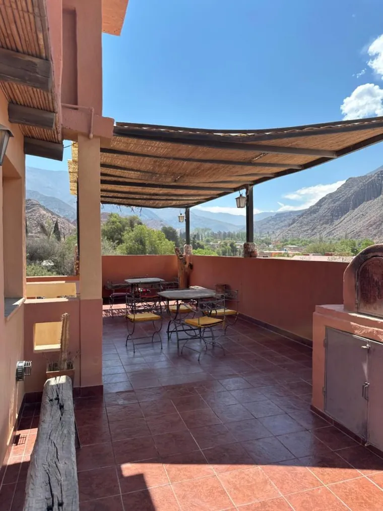
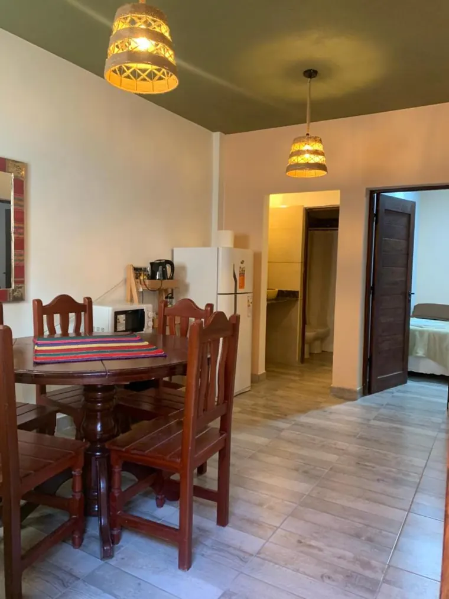
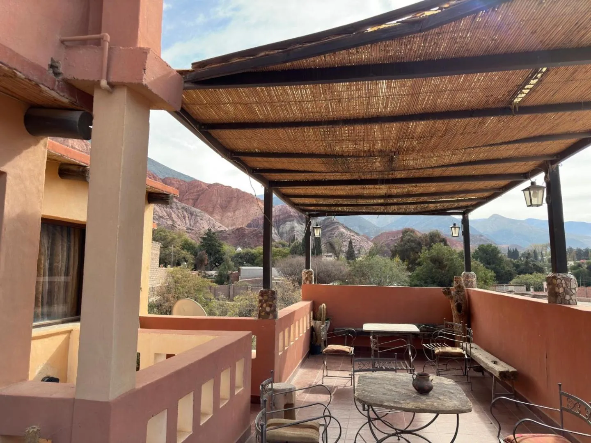
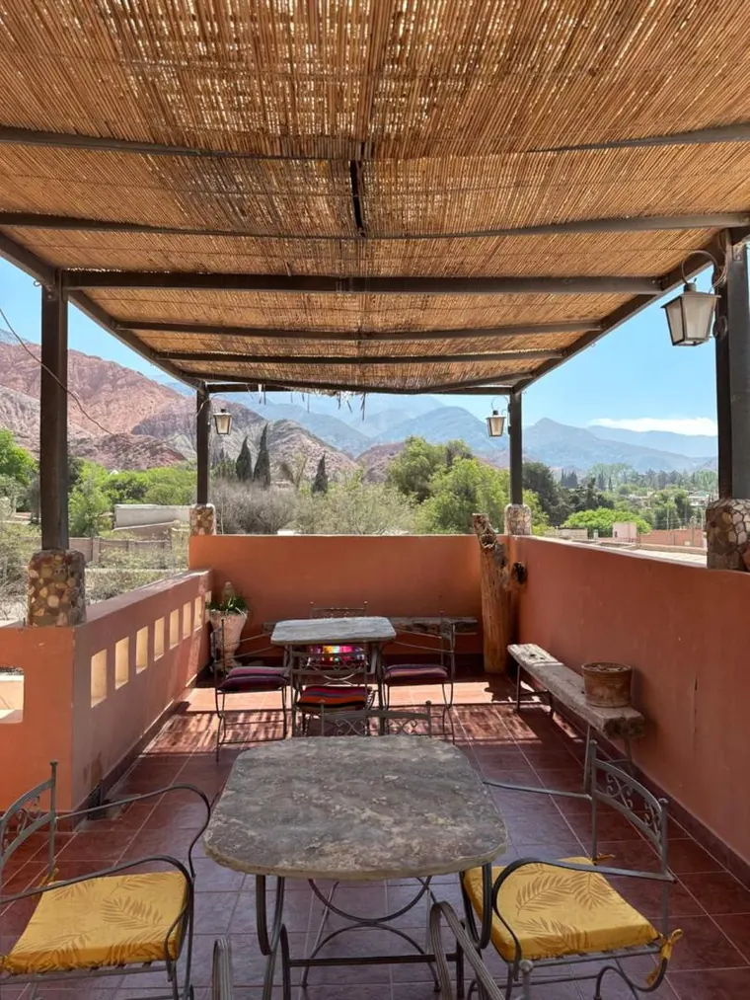

«Las chicas nos prestaron platos para el asado y hasta un poncho porque hacía frío.»
Purmamarca Jujuy 2.192 msnm
Despertá mirando el Cerro de los Siete Colores.
Dos posadas a una cuadra de la plaza de Purmamarca. Terraza frente al cerro, desayuno casero y habitaciones con aguayos.
- 9,3ubicación
en Booking - +800opiniones
de huéspedes - 1cuadra
de la plaza


Dónde dormir
Dos posadas, a una cuadra de la plaza.
Las dos quedan en el centro de Purmamarca, a pasos de la Plaza 9 de Julio y de la feria. Elegí según con quién venís.


Gorriti, casi esquina Salta
La de la terraza.
Techo de cañizo, mesas de piedra y el Cerro de los Siete Colores enfrente. Es lo que más nombran los huéspedes: el mate de la tarde y el asado de la noche pasan acá arriba.
- Habitación doble1 cama doble · baño privado2
- Habitación triple1 cama doble + 1 simple · baño privado3
- Vista al cerro
- Parrilla y horno de barro
- Wifi · 9,4 en Booking
- Desayuno
Check-in de 14 a 22 hCheck-out hasta las 10 h
Ver disponibilidad en Gorriti«Tiene una terraza hermosa con vista a todo el pueblo y al cerro de los 7 colores.»
Sebastián · Argentina · reseña en Booking


Lavalle, entre Rivadavia y Gorriti
La de las familias.
Para venir con chicos o en grupo: habitaciones con cuchetas y departamentos en planta baja con cocina equipada. Hay patio con mesas y la feria artesanal queda enfrente.
- Doble o twin1 cama queen o 2 simples2
- Cuádruple1 cama doble + cucheta4
- Familiar1 queen + 1 simple + cucheta5
- Departamento en planta bajaQueen + simples + sofá cama · cocina6
- Cocina equipada
- Desayuno con opción sin TACC
- Frente a la feria
Check-in de 13 a 18 hCheck-out hasta las 10 h
Ver disponibilidad en Lavalle«Bien ubicada, con la feria justo enfrente. El desayuno estuvo muy bueno y la atención fue muy amable.»
Karla · Brasil · reseña en Booking (traducida)
Posada Gorriti
Subí a la terraza.

«El lugar es hermoso y hasta mágico. Tiene unas vistas de ensueño.»
Giuliana · Argentina · reseña en Google
“Vista”es la palabra que más se repite en nuestras 239 reseñas de Google: aparece 43 veces.
Adentro
Aguayos en la cama, cañizo en el techo.
Habitaciones con baño privado y calefacción para las noches frías de la Quebrada, y un desayuno que aparece en muchas de las reseñas.
Tocá una foto para verla grande.
Lo que dicen
Opiniones de huéspedes
+800
opiniones de huéspedes: 569 en Booking y 239 en Google.
- Ubicación · Posada Lavalle9,3
- Ubicación · Posada Gorriti9,2
- Wifi · Posada Gorriti9,4
«Lucas ya nos estaba esperando, fue muy amable y atento. El desayuno, buenísimo. Sin dudas volvería.»
«Terraza con una vista magnífica. La habitación es cómoda, con heladera y pava eléctrica, y está a dos pasos del centro.»
«Tranquila pero muy cerca del centro. Habitación limpia y con todo lo necesario. Desayuno bueno y abundante.»
«Una terraza increíble con vista a las montañas. Cerca del centro y, aun así, tranquila.»
Reservas directas
Reservá directo, sin vueltas.
Elegís fechas y habitación, dejás tus datos y te queda el código de reserva en pantalla. Nada se pierde en un mensaje.
- FechasLlegada, salida y cuántos vienen.
- HabitaciónTe mostramos lo que entra en tu grupo.
- Tus datosNombre y un contacto, nada más.
- Código de reservaQueda confirmada al instante.
Sin intermediarios Te respondemos de 9 a 21 h
Cómo llegar
En el centro del pueblo, al pie del cerro.
Las dos posadas quedan a unos 120 metros de la Plaza 9 de Julio. Purmamarca está a 65 km de San Salvador de Jujuy, por la RN 9 y la RN 52.
Datos del mapa: OpenStreetMap
Atención por WhatsApp
LMMJVSD
- Posada GorritiGorriti, casi esquina SaltaCómo llegar
- Posada LavalleLavalle, entre Rivadavia y GorritiCómo llegar
Aeropuerto de Jujuy: a unos 95 kmSalinas Grandes: poco más de una hora por la Cuesta de LipánPaseo de los Colorados: arranca a pocas cuadras
Antes de venir
Lo que siempre nos preguntan.
¿No está tu duda? Escribinos y te respondemos en el día.
Preguntar por WhatsAppEn Gorriti el check-in es de 14 a 22 h y en Lavalle de 13 a 18 h. El check-out, hasta las 10 h. Si llegás más tarde, avisanos por WhatsApp y lo coordinamos.
Se sirve todas las mañanas desde las 8:30: jugo exprimido, medialunas, tostadas, quesito y dulces, fruta y café. En Lavalle hay opción sin TACC.
En Gorriti no hay cochera propia, pero se estaciona sin problema en la calle, que es tranquila. Para Lavalle, consultanos disponibilidad antes de llegar.
Sí. Wifi en las dos posadas y calefacción en las habitaciones: en invierno las noches de la Quebrada son frías, así que no te preocupes por eso.
Estás a una cuadra de la plaza y de la feria artesanal. El Paseo de los Colorados arranca a pocas cuadras, Salinas Grandes queda a poco más de una hora por la Cuesta de Lipán y Tilcara, a media hora por la RN 9.
Desde esta página: elegís fechas y habitación y te queda el código de reserva. Si preferís hablar con alguien, escribinos por WhatsApp de 9 a 21 h.
Tierra Adentro · Purmamarca
Tu ventana al cerro te espera.
Guardá tu fecha ahora: en vacaciones de invierno y fines de semana largos, la Quebrada se llena rápido.
